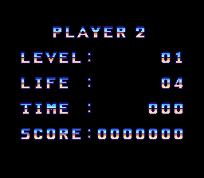

ターゲットブロック2
ターゲットブロック2
くずせ、ブロック!
パワーボールが迷宮都市を駆ける!
MCUと言うラケットを使ってパワーボールの動きをコントロール。そして、高速に しかも8方向にスクロールする、最大12画面にも及ぶマップ上のブロックを破壊する のです。
待ち受けるのは、一筋縄では行かないような敵キャラ、マップ、しかけ……
ブロックくずしは進化します!
このたびはSOFELのファミリーコンピュータ用ゲーム・カセット『TITAN～タイタ ン』をお買い上げいただき、誠にありがとうございます。ご使用の前に必ずこの取扱 説明書をよくお読みいただき、正しい使用法でご愛用ください。なお、この取扱説明 書は大切に保管してください。
使用上の注意
時に西暦2114年…
ここベガポリスでは、政治に、社会に、あらゆるものに人々は不満をつのらせ、 その欲求は爆発寸前にまで膨らんでいた…
ベガポリスの最高執行部は、これに対する解決策としてベガポリスに一つの "街"を作り、そこで毎日のように、莫大な賞金を賭けたゲームを行った。
そのゲームとは、何十階層もある迷路構造のエリアを、様々な障害を乗り越え、 目標を破壊しつつ進んでいくというものだった。
そのゲームは『タイタン』と呼ばれ、人々の間で絶大な人気を得ていった。
『タイタン』に人々の人気が集まった最大の理由は、1000クローナという賞金の ために自分の命を賭け金としなければいけないということからであった。
そう、タイタンの中でのあらゆるミスは、死につながり、タイタンでのゲームオー バーとは、文字通り命の終りを意味していた…
しかし、人々は、死と隣り合わせのスリルというものに奇妙な魅力を感じてか、 このタイタンへの挑戦者は後を立たなかった…
ベガポリスの人々は、執行部の思惑通りに、この『タイタン』に熱狂し、不満の 火種は徐々に小さくなろうとしていた…
そして、この難攻不落の『タイタン』に、今また君も挑戦しようとしていた…
ようこそ、『タイタン』へ。
初めにいっておくが、この『タイタン』に入ったなら、おまえのその命、もうな いものと思ってもらおう。
今まで、おまえの前にここに入っていった者はみな、この『タイタン』の80ある 段階の途中で命尽きているのだからな。
おまえはこれから、この『タイタン』に入り、MCU(マグネティック・コントロー ル・ユニット)で、パワーボールをコントロールし、この果てしない"街" の中を進んでいくことになる。
中では、デスアイコン(死の使い)たちが、おまえの来るのを待ち焦がれているぞ。
何しろおまえ(MCU)かボールが、やつらにほんのちょっと触れただけで、おまえの 生命力は吸い取られ、やつらはエサにありつけるのだからな。
そうなってしまえば、このお遊びはおしまい。ゲーム・オーバー、と言うわけだ。
このメッセージを聞いてもまだ、挑戦する勇気が残っているなら、さぞかし『タ イタン』はおまえを歓迎するだろう。
趣向を凝らした盛大な歓迎をな。クククッ
さあ、はやく入ってくるがいい!
フハハハハッ
★ただし、ポーズ中のキー操作は以下のようになります。
*注意!!!…ゲーム中は3分間、その他では1分間、コントローラーIからの入力が無 いとき、自動的に次の画面に移行します(ゲーム中ならレベル得点表示画面に、レベ ル得点表示画面なら表示中のレベルのゲーム画面に…)ので、気をつけてください。
ゲーム中にポーズにしておけば移行しません。
1.ORIGINAL OR CHALLENGE?
まず初めに、モードの選択をします。モードについては "ゲームモードの説明"を見て下さい。
2.START OR CONTINUE?
オリジナルモードを選択した場合、次にSTARTか、 CONTINUEかを選びます。
3.GAME START!!
ファミコン版タイタンでは、2種類のタイタンを楽しむことができます。
TITUS社版『TITAN』の完全移植版です。
持機は8機で、5万点ごとに、得点と交換に1UPします。また、10面ごとにボーナス ステージが登場します。
タイムトライアル制のタイタンで、タイムリミットは10分です。
1人用と2人用の2種類があります。
ソフエルオリジナルのマップを中心とした10面で構成されています。
持機は5機で、1UPはありません。
目標となる得点を設け、いかに早くこの得点に到達するかをめざします。
1面から10面まで好きな面から始められます。

2人で、獲得した得点の大小を競います。
このモードではその面をクリアした場合はもちろん、もし、面の途中で死んでも、 次の面に進んでしまいます。
操作はすべてコントローラーIを使用します(コントローラーIIは使用しません)。
オリジナルモードで、面をクリアするごとに表示される8文字のパスワード。これ を間違いなく入力すれば前回と同じ状態でゲームを再開できます。
MCU(マグネティック・コントロール・ユニット)と呼ばれる"ラケット" でパワーボールという"球"の動きをコントロールします。
そして、下の"面クリアの条件"を満たせば1面クリアとなります(面に よって、クリアの方法が指定されている場合があります)。
ただし、ボールまたはMCUが、デス・アイコンと呼ばれる"敵ブロック" に触れるとアウト!!MCUの残りが1個減らされます。そして、すべてのMCUを失うとゲー ムオーバーです。
MCUには、3つの使い方があります。
状況に応じて使い分けてください。
高速でボールと接触させるとMCUで跳ね返らずに、MCUの中を貫通します。貫通し たボールは、そのスピードが減速します。
→
MCUと障害物でボールを挟み、その間隔をだんだんとせばめていくと、MCUの中に ボールが取り込まれます。
→
MCUとボールをタイミング良くぶつけると、MCUの中にボールが取り込まれます。
★取り込まれたボールは、その直後に押した方向キーと逆の方向に打ち出されま す。
オリジナルモードでは、自分がすでにクリアしてきた面であれば、その中の好き な面を自由に何度でもプレイすることができます。
例えば、自分がレベル10までクリアしているのであれば、レベル1～10のどれでも プレイ可能です。
レベル得点表示画面(面クリアした後に出現)のときに十字キーの上下で、レベル の数字を上下させます。
オリジナルモードを10面クリアするごとにボーナスステージが現れます。Aボタン で、飛んでいるボールを内側のブロックにぶつけてください。するとブロックから数 字が出てきます。これがボーナス得点です。
これを4回繰り返し、10の桁から10,000の桁までの数字を決定します。
ただし、曲がり角でAボタンを押すと、ボールは軌道から離れてしまい、そこでボー ナスステージは終わりとなります。また、一度数字が出たブロックはドクロに置きか わり、そのドクロにボールが当あたると、ボーナスは没収となってしまいますので気 をつけて下さい。
ターゲットブロック2タイタン
オールクリア コンテスト 開催!!
ファミコン版タイタンを日本で最初にクリアするのは君だ!!
オリジナルモードで、80面すべてクリアすると画面に8文字のパスワードが2つ表 示されます。
このパスワードをすべてハガキに書いてソフエルまで応募して下さい。
先着順に、下記の賞品をプレゼント致します。
応募は必ず官製ハガキで、住所・氏名・年齢・電話番号・職業(学年)と2つのパス ワードを書いて送って下さい。
尚、発表は賞品の発送をもってかえさせていただきます。
また、締切日は特に設定しておりませんが、人数になり次第締切らせていただき ます。
(あて先。内容は省略)